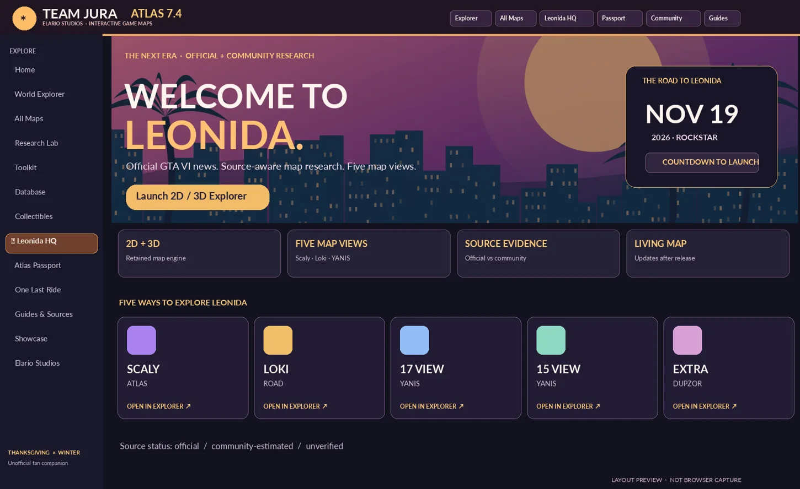

🍁 THANKSGIVING × WINTER · EXPLORER EDITION
Every GTA world, one directory.
Choose a world. Explore maps, find locations, build routes, track progress, and follow the research—all from one organized headquarters.
THE GAME UNIVERSE
Map Directory · choose your world
 GTA VI · LeonidaVice City & the state of LeonidaLocal research map ↗
GTA VI · LeonidaVice City & the state of LeonidaLocal research map ↗
No maps match that search. Try another title.
Local engine or Local landmark map means the map runs in Team Jura Atlas. Reference gateway links to the source's map while we develop independent local artwork, coordinates, and layers for that world. No invented maps.
THE NEXT CHAPTER · NOVEMBER 19, 2026Leonida Launch HQOfficial news · Scaly & Loki · 2D/3D · Research ↗YOUR LEGACY · EVERY GTA ERAAtlas PassportTrack collectibles · Earn stamps · Free, local backups ↗▧ Explorer previewThe live map opens in its own optimized workspaceExplore GTA VI ↗
⌕ Find places, routes, collections…
▤ Map views ⌄
Scaly · Atlas
Loki · Road
YANIS · V17
YANIS · V15
DUPZOR · V51
Open live map ↗
ILLUSTRATIVE PREVIEW · *3D SUPPORT DEPENDS ON LOADED ASSETS⚒ Toolkit & utilitiesYour GTA command center
☑ Business & property tools ↗◇ Collectible checklists ↗☆ Story challenges ↗☷ Online events tracker ↗▤ Database & garages ↗⌖ Map coverage & sources ↗Open all tools ↗ONE LAST RIDE · COMMUNITY CELEBRATION
Visit the memory wall ↗Los Santos forever. Leonida awaits.
Our crew's goodbye to GTA V and welcome to a new chapter. Save your best moments and links to your own clips.